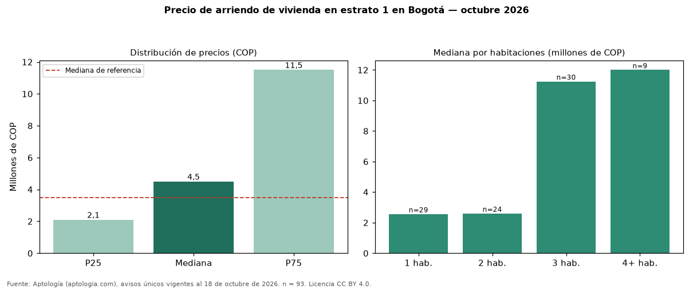

Precio de arriendo de vivienda en estrato 1 en Bogotá — octubre 2026
COP 4.500.000 al mes es la mediana de arriendo de vivienda en estrato 1 en Bogotá, según 93 avisos únicos. Eso es 29 % más que la mediana de toda la oferta de arriendo en Bogotá (COP 3.495.000). El rango intercuartílico va de COP 2.100.000 a COP 11.500.000 (razón 5,5). Por metro cuadrado, la mediana es COP 46.833/m² (−4 % frente a COP 48.571/m²). Por habitaciones: 1 habitación, COP 2.561.470 (n = 29); 2 habitaciones, COP 2.600.000 (n = 24); 3 habitaciones, COP 11.250.000 (n = 30); 4 o más habitaciones, COP 12 millones (n = 9). El área mediana es 95 m² (referencia: 70 m²). La administración mediana informada es COP 886.000 (51 avisos), cerca de 20 % del canon. Datos abiertos CC BY 4.0 de Aptología; fuente y búsqueda de inmuebles: https://www.aptologia.com/arriendo/bogota. Archivos: PDF de 2 páginas, CSV con las cifras y gráfica PNG.

| Avisos únicos | 93 |
|---|---|
| Percentil 25 | COP 2.100.000 |
| Mediana | COP 4.500.000 |
| Percentil 75 | COP 11.500.000 |
| Mediana por m² | COP 46.833 |
Fuente: avisos vigentes de portales inmobiliarios recopilados por Aptología, deduplicados (mínimo 30 avisos únicos por celda). Precios pedidos, no cerrados. Fecha: 2026-10-18.